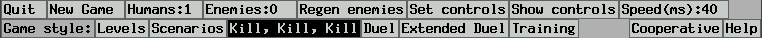
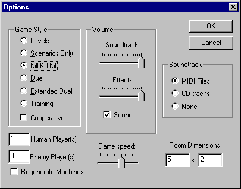
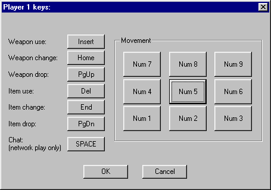
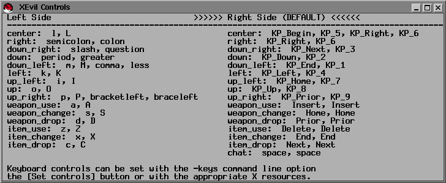
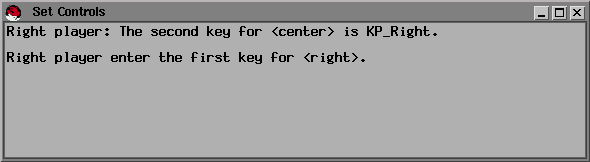

The XEvil 2.X Instruction Manual
Copyright © 1999 Steve Hardt
Last Modified 1/19/2000
Most recent version is at http://www.xevil.com/docs/instructions.html.
Visit www.xevil.com
for downloads, source code, screen shots, and more documentation.
This program is free software; you can redistribute it and/or modify
it under the terms of the GNU General Public License as published by
the Free Software Foundation; either version 2 of the License, or (at
your option) any later version.
This program is distributed in the hope that it will be useful, but
WITHOUT ANY WARRANTY; without even the implied warranty of
MERCHANTABILITY or FITNESS FOR A PARTICULAR PURPOSE. See the
General Public License for more details.
Introduction
XEvil is a side-view, single or network-multiplayer, fast-action, kill-everything,
game for Windows and UNIX.
You have sinned in life. Now, you die and go to Hell. XEvil
is the contest that determines your fate in Hell for all eternity.
At the end of a game, you receive one of many possible rankings.
A poor player, for example, may spend the rest of time as "Satan's Earwax
Remover", while a good one might achieve a prestigious title such as "VP
of Hell Marketing" or even "Lead Software Engineer of Hell".
Contents
-
User Interface
-
Game Play
-
Appendix
Part I: User Interface
The XEvil user interface is designed to be as simple and direct as possible.
We're not trying to win any awards for fancy GUI gizmos, we just want to
get you to the death-and-gore of XEvil itself.
UNIX and Windows Differences
Although game play, graphics, networking, and pretty much everything else
is the same between the UNIX and Windows versions, the user interfaces
are quite different. From here on, we will mark sections that apply
only to UNIX or only to Windows with with "UNIX:" or "Windows:",
respectively.
UNIX:
Menu Bar

Windows:
Options Dialog

Graphics Options
At startup, the XEvil License Agreement Dialog appears and gives you several
graphics options. XEvil is designed to run on a variety of machines,
with widely varying graphics capabilities. So, most of these options
are meant to allow fast machines to use all the whiz-bang graphics features,
while still allowing slow machines to play full speed (with fewer features
enabled).
UNIX:
-
[Large Viewport] chooses between large- and small-viewport modes.
Large-viewport mode is the default, playing XEvil in full resolution.
Small-viewport plays XEvil at half-resolution (similar to XEvil 1.x), shrinking
all graphics to half normal size. Two uses: With small-viewport,
you can fit two XEvil windows on one display to play two players on the
same machine. And, small-viewport mode is much faster on machines
with slow graphics.
-
[Smooth Scroll] chooses between smooth-scroll and discrete-scroll modes.
In smooth-scroll, your character is always at the center of the screen,
with the world scrolling to follow you. However, smooth-scroll requires
a machine with very fast graphics, so discrete-scroll is the default.
In the latter, the viewport shifts in discrete chunks, only scrolling when
your character gets to the edge of the screen.
-
Turn off [Draw Background] to speed up smooth-scroll mode. Instead
of the appropriate world-background, the background will be solid black.
This switch does nothing in discrete-scroll mode.
Windows:
-
[Full Screen] chooses between full-screen and windowed modes. Full-screen
is generally faster, running in 800x600, 256-color mode. But, windowed
mode allows you to easily switch between XEvil and other applications.
-
Turn off [Draw Background] to speed up drawing. Instead of the appropriate
world-background, the background will be solid black.
Controls
XEvil uses keyboard controls, 9 keys for movement, 3 keys each for weapons
and items, and one key for network chat. We use the same default
keyboard layout on both UNIX and Windows to assist multi-platform users.
The default setting uses the 9-key number pad for movement, the "insert-home-pageup-delete-end-pagedn"
block of six keys for weapons and items, and the space bar for network
chat.
Movement:
For Walking characters, press right-left to walk. Up and up-diagonals
to jump, down and down-diagonals to duck and crawl. Middle key to
stop moving.
For Sticky (wall-crawling) characters, press the appropriate diagonal
towards the wall to climb, away-diagonal to jump off the wall.
Press up-down to climb ladders. If you are jumping through the
air, you can grab a ladder by pressing up or down while passing over the
ladder.
For Flying characters, press the direction you would like to fly.
Middle key to stop in place.
Weapons/Items:
To fire a weapon, or attack hand-to-hand, hold down the weapon-use
key and tap the direction you would like to attack. Movement will
not be affected as long as the weapon-use key is held down. Thus,
you can move in one direction while firing in another.
Tap weapon-change to cycle through available weapons, and weapon-drop
to drop your current weapon.
Item use, change, and drop keys allow you to use items, cycle through
available items, and drop items, respectively.
Network chat is described in the Network XEvil section.
Windows:
The [Settings | Keyboard Controls...] menu activates the Keyboard Controls
Dialog:

Click on a button to set the key for that command. On Windows,
keyboard controls are saved persistently between sessions.
UNIX:
Keyboard controls set via user interface are not saved between sessions.
However, they can be set permanently via X Resources.
To pause, hit F1, then any key to resume.
UNIX: Viewing current keyboard controls
Cllick the [Show Controls] button on the menu to view the current keyboard
controls.

A few tricky things. On UNIX, you can have a two player game
on a single machine, by sharing the same keyboard. The first player
uses the right side of the keyboard, the second player the left.
If you are playing one-player, or are connecting to a server as a client,
you only need to think about keys on the right side.
Another tricky things is that UNIX XEvil allows you to map one-or-two
different keys to each function. Here's why. The default left
keyboard mapping use nine-keys centered on the 'L' key. Put your
right hand on the keyboard with middle finger on 'L' and you'll notice
that up-right and down-left both have two nearby possible keys. So,
XEvil allows you to hit either 'P' or '[' for up-right and either 'M' or
'<' for down-left. In these cases, two different keys are mapped
to the same function.
And, yet another tricky thing (YATT) is the X Window System key naming
convention. Most of the key names, e.g. "period" or "comma", are
obvious. But, some are more obscure. "Prior" and "Next" generally
mean "Page Up" and "Page Down". Anything starting with "KP_" means
a key on the numeric keypad. If you are really stuck, read "/usr/include/X11/keysymdef.h"
or the "X" man pages.
UNIX: Setting Keyboard Controls via
User Interface
Click the [Set Controls] button to change the keyboard controls.

The dialog will ask you, in order, for all keyboard controls.
Click on the Set Controls Dialog, and type in the requested keys.
Now, there is the whole two-keys-to-one-function thing described above,
so you have the option to enter two different keys for each function.
But, most of the time, you will just hit the same key twice.
Changes take effect immediately, so you don't always have to cycle through
all controls. In particular, if you are playing one-player, dismiss
the dialog after setting controls for the right side. To dismiss
the dialog, click the close-window button (usually) in the upper-right
corner, or unselect [Set Controls] from the XEvil menu. If you type
an incorrect key, dismiss the dialog and start again.
UNIX: Setting Keyboard Controls via X Resources
If you're sick of going through the [Set Controls] dialog every time you
run XEvil, set the controls once via X Resources (part of the X Window
System). Generally, you add lines to the ".Xdefaults" or ".Xresources"
file in your home directory. See the man pages for X(1) and xrdb(1)
to learn more about setting/viewing X resources.
Remember, there are separate sets of controls for the right and left
sides of the keyboard. If you are playing one-player mode, or running
as a client connecting to a server, you only need think about the right
hand set. Also remember, up to two keys can be mapped to each function.
The easiest way to show this is with a few examples. The possible values
for each function are the keys in "/usr/include/X11/keysymdef.h" with the
"XK_" prefix stripped, e.g. "XK_asterisk" becomes "asterisk".
"XEvil.right_weapon_use: Insert"
The keysym for weapon-use on the right side controls is the insert
key.
"XEvil.right_left: KP_Left"
The keysym for move-left on the right side controls is the left-arrow
key on the numerical keypad ("KP_" means numerical keypad).
"XEvil.left_up_right_2: bracketleft"
The second keysym for move-up-right on the left side controls is the
left-square-bracket.
A sample resource file. Further examples are in the "x11/app-defaults"
directory in the XEvil source distribution.
! XEvil resources for a sun4 SPARC station 1
!
! Right side of keyboard
XEvil.right_center: F31
XEvil.right_right: Right
XEvil.right_down_right: F35
XEvil.right_down: Down
XEvil.right_down_left: F33
XEvil.right_left: Left
XEvil.right_up_left: F27
XEvil.right_up: Up
XEvil.right_up_right: F29
XEvil.right_weapon_use: F21
XEvil.right_weapon_change: F22
XEvil.right_weapon_drop: F23
XEvil.right_item_use: F24
XEvil.right_item_change: F25
XEvil.right_item_drop: F26
! Left side of keyboard
XEvil.left_center: l
XEvil.left_right: semicolon
XEvil.left_down_right: slash
XEvil.left_down: period
XEvil.left_down_left: m
XEvil.left_down_left_2: comma
XEvil.left_left: k
XEvil.left_up_left: i
XEvil.left_up: o
XEvil.left_up_right: p
XEvil.left_up_right_2: bracketleft
XEvil.left_weapon_use: a
XEvil.left_weapon_change: s
XEvil.left_weapon_drop: d
XEvil.left_item_use: z
XEvil.left_item_change: x
XEvil.left_item_drop: c
Game Style
There are six "Styles" of XEvil game play, controlled by the "Game Style"
toggle buttons.
-
Levels
-
The default style for single-player games. Kill all enemies on each
level to advance to the next more difficult level. Every five levels,
you must complete a scenario. A scenario is a mission with a specific
goal, e.g. "Capture the Flag", "Hive"-find the exit before the hoards of
Aliens kill you, "Kill the Baby Seals", or "The Pound"-survive an onslaught
of rabid dogs.
-
Scenarios Only
-
No normal levels, you only play scenarios.
-
Kill, Kill, Kill
-
Everything attacks everything, machine players even attack each other.
Game is over when there is one (or fewer) survivors. Also makes a
good screen-saver, set zero human players and watch the machines fight
it out.
-
Duel
-
Good for multi-player tournaments. Each player has three lives.
-
Extended Duel
-
The default "Death Match" style for multi-player network games. Humans
have infinite lives and the game keeps track of the number of kills per
player.
-
Training
-
No enemies, good for learning the controls (and debugging).
You can further specify the type of game by setting values for [Human Players],
[Enemy Players], [Regenerate Enemies], and [Cooperative]. Depending
on the Game Style setting, certain of these controls will be ghosted out
because their values are unused.
-
[Human Players]
-
Set the number of players on this machine. On Windows, this is zero
or one. You can set zero players then sit back and watch the machines
kill each other. On UNIX, this can be zero to six. Two players
can share the same machine, each using half of the keyboard. Or,
you can open windows on multiple X Displays with the -display<N> command
line option, to play up to six players. Note: multiplayer by opening
multiple X Displays is different than true client/server network play,
described in the "Network XEvil" section. This control is unused
for true network play, because the value is set implicitly by the number
of machines connected to the server.
-
[Enemy Players]
-
Only used for certain Game Styles, set the number of enemy players in the
game. E.g. for a human vs. human duel, you may or may not want to
have computer players running around in the game.
-
[Regenerate Enemies]
-
Only used for certain Game Styles, choose whether enemy players are automatically
regenerated. E.g. if [Enemy Players] is set to ten, and all but four
have been killed, six new ones will soon appear to take the place of their
fallen comrades.
-
[Cooperative]
-
You can choose a [Cooperative] game, where all humans work together.
Your dogs and doppelgangers will not attack other humans, human-fired missiles
will not track other humans, humans will not bump into each other, and
you all share the same set of lives.
Network XEvil
For ease of use and distribution, the XEvil client, server, and standalone
games are bundled in the same executable.
XETP, the XEvil Transport Protocol, is platform independent. You can
connect Windows clients to UNIX servers and vice versa. Even though
UNIX XEvil has no sound (yet), Windows clients connected to UNIX servers
will get correct sound effects. XETP works over standard TCP/IP connections
(using UDP and TCP packets), so XEvil can be played over the internet,
a LAN, or a dialup connection.
Network XEvil provides a simple chat mode, facilitating taunts and other
important modes of inter-player communication. On either Client or
Server, press the chat key (default is spacebar), enter your message, then
"Enter" to send the message or "Esc" to abort the message and return to
normal controls.
Client
Windows:
You can run an XEvil client from the user interface at run time.
Select the "Network | Connect to Server..." menu. Enter the hostname
or IP address of the server along with the port number (if different than
the default port 6066). Optionally, enter a player name. If
you do not choose a player name, your name will be chosen randomly each
game. Hit "OK" to connect.
UNIX:
Use the command line options described below.
Windows and UNIX:
You can run an XEvil client from the command line. Type "xevil
-connect <server_name> {server_port}" to connect to a specific server,
optionally specifying the server port number, e.g. "xevil -connect xevil.notgod.com".
While connected, you can hit [New Game] to restart. The server
will end your old game and start you with a new character.
Server
The server has the option to either be a regular "Player" in the game,
or to run in "Observer" mode with a scrollable window watching the action.
"Player" mode makes it very easy to set up, say, two player games.
One machine runs the server, the other connects to it, done.
Windows:
You can run an XEvil server from the user interface at run time.
Select the "Network | Run as Server..." menu. You may change the
port number to run on a port other than the default, 6066. Choose
either "Player" or "Observer" mode and hit "OK". Clients can
now to connect to your machine.
UNIX:
Use the command line options described below to run a UNIX XEvil server.
Windows and UNIX:
You can run an XEvil server from the command line. Type "xevil
-server {port_number}" to run an XEvil server in "Player" mode, optionally
specifying a server port number. Add the "-observer" flag to run
in "Observer" mode.
Windows:
Windows XEvil provides a dedicated server mode, with a small window
to control game options and view server logs. Dedicated-Server mode
performs no drawing, so inflicts little slowdown on other applications.
Run "xevil -server -dedicated" from the command line. Dedicated
servers are always in "Observer" mode.
UNIX:
UNIX XEvil provides a non-graphical command-line-only server interface.
This allows XEvil servers to be run in startup scripts or remotely via
telnet when no graphical interface is available.
Run "xevil -server -no_ui" from the command line. Command-line
servers are always in "Observer" mode.
You can record a server log by redirecting the output to a file, say
"log.txt".
"xevil -server -no_ui > log.txt"
or
"xevil -server -no_ui | tee log.txt"
The second form will copy the log to "log.txt" while still displaying
it on the command line.
Remote Server Monitoring
You can remotely monitor an XEvil server with the "serverping" utility
program. serverping queries a server for certain information, including
the list of players on the server, and their kills. serverping can
be used to make web pages that actively monitor XEvil servers.
Currently the only way to obtain serverping is to download the XEvil
source code and compile it on a UNIX machine. serverping will be
generated in the same directory as the XEvil executable. I haven't
tried building serverping.cpp on a Windows machine, but it is all cross-platform
code and shouldn't be too hard to make it work.
Difficulty
There are four levels of difficulty, "Trivial", "Normal", "Hard", and "Bend
Over".
UNIX:
You will be prompted for the level of difficulty at the start of the
first game. Press the key for the desired level of difficulty.
Or, hit space or click a mouse button as a shortcut for "Normal".
Windows:
The [Settings | Keyboard Controls...] menu will activate the Difficulty
dialog. Changing level of difficulty will not effect a game currently
in progress. Start a new game to play with the new level of difficulty.
Game Speed
UNIX:
The [Speed] control in the upper-right corner sets the time (in milliseconds)
between turns, e.g. 40ms implies a frame rate of 25 fps. A little
counter-intuitive in that smaller numbers give higher speeds. Set
[Speed] to zero to play at the max speed supported by your machine.
Windows:
Move the [Game Speed] slider in the Options Dialog to the right to
go faster, left to go slower.
UNIX and Windows:
Run "xevil -speed <speed_in_ms>" to set the exact speed in milliseconds,
similar to the UNIX [Speed] control.
If playing a network game, it's best to leave the speed at default.
If a client and server are running at different speeds, the client-side
dead-reckoning algorithm will be off, resulting in objects jumping around
the screen more than necessary.
Sound (Windows only)
The Options Dialog provides several options for controlling XEvil sound:
-
Set the volume of the background music with the "Soundtrack" slider.
-
Set the volume of the sound effects (gunshots, screams, and the like) with
the "Effects" slider.
-
Turn sound on/off altogether with the "Sound" toggle button.
-
Set background music to play from the built-in MIDI files (default).
-
Set background music to play random tracks from an audio CD.
In general, changes will take effect when you click "OK" on the Options
Dialog.
Sometimes, even with the "Soundtrack" slider all the way up, the MIDI
sound is still too quiet. Two ways to deal with this:
-
Open the Windows Volume Controls by right-clicking on the speaker icon
in the lower-right corner of your screen. Then crank the "Synth Volume"
all the way up.
-
Turn down the "Effect" volume in the XEvil Options Dialog. Then increase
the master volume on your speakers.
UNIX XEvil has no sound. But, with the source freely available,
I'm sure some industrious soul could write it (hint, hint).
Part II: Game Play
World
The XEvil World is a randomly generated two-dimensional map composed of
walls, floors, ladders, horizontal and vertical movers(elevators), and
doors. The maze algorithm guarantees every character that can at
least walk and climb ladders can get from any room to any other room.
Each level randomly chooses one of several graphical "themes", e.g.
a "Mayan" theme, a "Medieval" theme, an "Industrial" theme.
Characters
XEvil characters walk, climb ladders, climb on walls and ceilings, fly,
use weapons and items, and/or fight hand-to-hand depending on their specific
set of abilities. At the start of each life, you are randomly given
one of the characters to play. One time you may be a "Ninja", next
time a "Chopper-Boy". To succeed in XEvil, you need to learn all the major
characters. The XEvil
Character Profiles gives a full description of each.
You can build up characters with more powerful weapon and items, with
shields, or by earning bonuses like double health, double speed, hellfire
powers (light enemies on fire by touching them), or healing powers.
But, life is cheap, and often very short. A much less pumped character,
controlled by a clever and fast opponent, might just find the right weapon/item
combination to nail you where you least expect it.
Weapons and Items
Next to the characters themselves, weapons and items are the heart of XEvil
gameplay. We include many of the standard video game weapons and
items (hand-to-hand combat, melee weapons, projectile weapons, throwing
weapons, shields, MedKit), but also a number of more creative devices (Soul-Swapper,
Frog-Gun, Transmogifier, Doppelganger, Dog-Whistle, drugs, Cloak, and heat
weapons). The XEvil
Armory lists all the weapons and items in XEvil.
We implemented a system where it is fairly easy to find weapons, but
not too easy, and where it is impossible to hoard weapons from other players.
If you pick up a weapon you already have, your character will take the
ammunition from the new weapon. After killing an opponent, you may
loot all the weapons and items from the corpse (assuming you didn't blow
up the entire area with a Bomb or Grenade).
Don't get too attached to your body, you never know when it might get
snatched from under you. The XEvil Soul-Swapper lets you swap souls
between your body and someone else's. The Soul-Swapper is good for
taking over powerful enemies, or getting rid of your current near-death
body. The frog-gun temporarily turns an enemy into a harmless, hopping,
little amphibian. Be sure to catch and nail the critter before he
turns back. The Transmogifier (based on "transmogrify"), randomly
turns its user into a different Creature. It's good if your current
body is weak or wounded, or if you just feel like a change.
Doppelgangers and Dog-Whistles give you followers. Your followers
help you out, protecting you and attacking your enemies. And, you
even get the credit for all your followers' kills. Using a Doppelganger
generates a copy of your current body. It is largely independent,
wandering around the world attacking your enemies. Blowing a Dog-Whistle
summons two loyal and obedient Dogs. Unless ordered otherwise, Dogs
follow nearby protecting their master, attacking nearby targets and fetching
weapons and items. You can use the Dog-Whistle to order your Dogs
to seek in a certain direction or to return to your side.
XEvil has more drugs than a elementary school playground. Caffine
is the legal drug, keeps you awake and makes you go faster. No really
bad side-effects, although the shaking may make you fall off ladders and
such. Crack and PCP make you faster and stronger. But, they
come with a chance of overdose. If you do drugs and die, well, you
should've listened to Nancy Reagan. As long as you keep constantly
high, feeding your habit with more drugs, you won't suffer the negative
effects of the come-down. If you see your opponents shaking, twitching,
and jumping all over the place, be careful, they may be strung out on Crack.
The "Cloak" gives limited invisibility. The background shimmers
in the shape of your character, so only very observant players can see
you. Cloaking effects last for quite a while (not infinite, don't
want cowards to hide in the corners forever), but end as soon as you fire
a weapon. Cloak is perfect for ambush attacks.
Now, what would Hell be without fire? Flame-Throwers, Napalm-Grenades,
and Fireballs allow you to have a barbecue with your unwanted guests.
The more you hit 'em, the hotter they get, the longer they burn, and the
more damage they take. Sometimes you can hit someone with enough
fire so that after they kill you, they still burn to death. Vengeance
from the grave. Of course, all Demons and Demonic objects are immune
to heat attacks. "Gee, that tickles."
XEvil has no personal hand-held or built-in teleporters.
I hate games where your quarry magically beams away right before you kill
them. Stationary teleporters are ok. Doors and teleportation
booths set into in the world background move you instantly from one fixed
location to another.
Part III: Appendix
Title
The title, "XEvil", reflects the game's early UNIX roots, the X Window
naming convention of applications like XTerm, XClock, XTrek, and
XEmacs. Now, with cross-platform support, the title is read as "XEvil"
== "eXtremely Evil", "eXceptionally Evil", "eXcessively Evil", "eXtraordinarily
Evil", "eXclusively Evil", "eXquisitely Evil", "eXorbitantly Evil", etc,
etc.
Hints
The combination of weapons and items in XEvil allows for a number of creative,
"classy" kills and strategies, many we never thought of while writing the
game. Here are a few examples:
-
While an enemy is shooting at you, hit him with the Soul-Swapper.
After switching bodies, his own bullets will kill him.
-
Drop a Transmogifier on an Alien or some other tough enemy. It will
probably turn him into something easier to kill.
-
Trigger a Bomb, but don't drop it. Then soul-swap an enemy.
He will find himself holding the hot-potato when it goes off.
-
Activate Doppelgangers and Dogs as living shields when being pursued by
a really nasty enemy, say a FireDemon.
-
Drop drugs on your enemies until they die from overdose.
-
Use a Transmogifier to change bodies when missiles are tracking you.
They will lose the lock-on and fly into a wall.
Command Line Arguments
Throughout the bulk of this manual, we mention command line arguments only
when they are especially relevant. Here we give an exhaustive list of all
XEvil command line arguments.
Values in <> are required, values in {} are optional. Arguments
that say (UNIX) or (Windows), are only meaningful for that
platform.
Windows:
UNIX users, of course, are intimately familiar with the command line.
Some Windows users may not be. On Win 95/98/NT, there are several
ways to run a program from the command line.
-
From the "Start" menu, click "Run...". In the dialog, type the command
line to run XEvil,
e.g. "c:\xevil2.0\xevil <some_list_of_command_line_arguments>"
-
"Start | Programs | MS-DOS Prompt". Then type the command line in
the MS-DOS window.
-
Create a shortcut to XEvil. Right-click on the shortcut icon and
bring up the Properties dialog. Choose the "Shortcut" tab, then add
any command line arguments to the "Target" field. Click "OK", then
double click the shortcut to execute.
UNIX and Windows:
-
Arguments applicable to all modes of playing, StandAlone, Client, or Server.
-
-debug_info
Extra debugging information. On Windows this adds a menu for
debugging the SurfaceManager.
-
-name <player_name>
Set the name for the first player, i.e. player number 0.
-
-name<N> <player_name>
Set the name for player number N, N starts at 0,
e.g. "xevil -name0 bob -name1 fred -name2 jane".
-
-reduce_draw
Don't draw backgrounds.
-
-speed <time_in_ms>
Set the time for each turn in milliseconds.
-
-display <display_name>
(UNIX) Run all XEvil windows on the given X Display. See
the "X" man pages for info on display names. Remember to include
the ":<screen_number>" after the machine name, e.g. "somemachine:0".
-
-display<N> <display_name>
(UNIX) Associate player number N with the given X Display.
N starts at zero.
E.g. "xevil -display0 chainsaw.domain.com:0 -display1 fthrower.anotherdomain.edu:0"
will play a game where player number 0 is on the machine "chainsaw" while
player 1 is on the machine "fthrower".
-
-draw_rects
(UNIX) Debugging tool for discrete-scroll mode. Show the
exact rectangles being drawn.
-
-help or -h
(UNIX) Print out a help message.
-
-info
(UNIX) Print out license agreement text, including credits.
-
-keys <keyset_name>
(UNIX) Use one of the built-in default keyboard settings.
Possible values are "alpha", "decmips", 'iris", "linux", "mac", "ncd",
"rsaix", "sun3", "sun4", "sun4_sparc", "tektronix". The default is
set at compile-time with the -DXEVIL_KEYSET flag.
-
-large_viewport
(UNIX) Start in large-viewport mode.
-
-no_buffer
(UNIX) Don't use double-buffer for smooth-scroll mode.
-
-no_smooth_scroll
(UNIX) Turn smooth scroll off.
-
-old_draw
(UNIX) Use an older drawing algorithm.
-
-small_viewport
(UNIX) Start in small-viewport mode.
-
-smooth_scroll
(UNIX) Turn smooth scroll on.
-
-stats
(UNIX) Periodically print out a few useful statistics about
timing and events.
-
-use_averaging
(UNIX) For small viewport mode, set the image reduction algorithm
to take the average of the source pixels. Default is sub-sampling.
-
-use_buffer
(UNIX) Use a double-buffer for smooth-scroll mode.
-
-cd
(Windows) Set soundtrack to play an audio CD.
-
-full_screen
(Windows) Run XEvil in full-screen mode.
-
-gen_xpm <directory_name>
(Windows) Auto-generate UNIX XPM images for XEvil into the given
directory. Used for development work.
-
-midi
(Windows) Set soundtrack to play the built-in MIDI music
-
-no_init_graphics
(Windows) Don't initialize all graphics at startup. Initialize
graphics lazily, load images when they are first needed.
-
-no_soundtrack
(Windows) Turn off the soundtrack.
-
-window_screen
(Windows) Run XEvil in windowed mode.
-
Arguments for StandAlone or Server.
-
-cooperative
Turn on "Cooperative" mode.
-
-difficulty <difficulty_level>
Set difficulty level, possible values are "trivial", "normal", "hard",
or "bend-over".
-
-duel
Set game style to "Duel".
-
-extended
Set game style to "Extended Duel".
-
-enemies <enemies_num>
Set number of enemy players.
-
-kill
Set game style to "Kill, Kill, Kill".
-
-levels
Set game style to "Levels".
-
-no_demo
Don't show a demo at game startup. Mostly for debugging.
-
-no_items
No weapons or items will be added to the XEvil world. Mostly
for debugging.
-
-no_level_title
Don't pause at the beginning of each level, displaying the level title.
-
-no_movers
No horizontal or vertical movers(elevators) in the game.
-
-no_new_level
Never advance to the next level. Only useful for debugging.
-
-one_item <item_name>
Only put one item in the XEvil world, an instance of the named class.
For debugging.
-
-regenerate_enemies
Turn on auto-regenerate enemies.
-
-rooms <N>x<M>
Set the dimensions of the XEvil world to be N rooms across and M rooms
down. Only used for certain game styles and scenarios.
-
-scenario <scenario_name>
For the "Scenarios" game style, always play the named scenario.
-
-scenarios
Set game style to "Scenarios".
-
-training
Set game style to "Training".
-
Arguments for Client Only.
-
-connect <server_name> {server_port}
Run XEvil as a client, connecting to the given server. Server
port number may optionally be specified, default is 6066.
-
-client_port <port_number>
Manually specifiy the UDP port used on the client side. Use this
if you get an error like "Could not bind local UDP port".
-
-no_dead_reckoning
Disable client-side dead reckoning. Objects will jump around
on the screen more.
-
-skip <skip_turns>
Manually specify the rate of data flow from the connected XEvil server.
"-skip 1" means send data at full rate no matter what. "-skip 2"
means only send every other turn, "-skip 3" means only send every three
turns, etc. "-skip 0" means automatically adjust the rate (default).
-
Arguments for Server Only.
-
-server {server_port}
Run an XEvil server. Optionally specify the server port number,
default is 6066.
-
-disconnect_time <time_in_ms>
Specify time in milliseconds before disconnecting clients that do not
respond.
-
-no_adjust_skip
Don't adjust the data flow rate to clients.
-
-no_disconnect
Never disconnect clients, even if they don't respond. Useful
for debugging.
-
-observer
Run the server in "Observer" mode. Default is "Player" mode.
-
-target_delay <num_turns>
Server will adjust rate of data flow to Clients to keep latency <=
this number of turns.
-
-no_ui
(UNIX) Run a command-line XEvil server. Implies "-observer".
-
-dedicated
(Windows) Run a dedicated XEvil server. Implies "-observer".
-
Arguments for Client or Server.
-
-buggy
Purposely drop packets, scramble packets, and send duplicate packets.
Simulate a crappy network connection to assist debugging.
-
-net_stats
Print out stats on network packets.